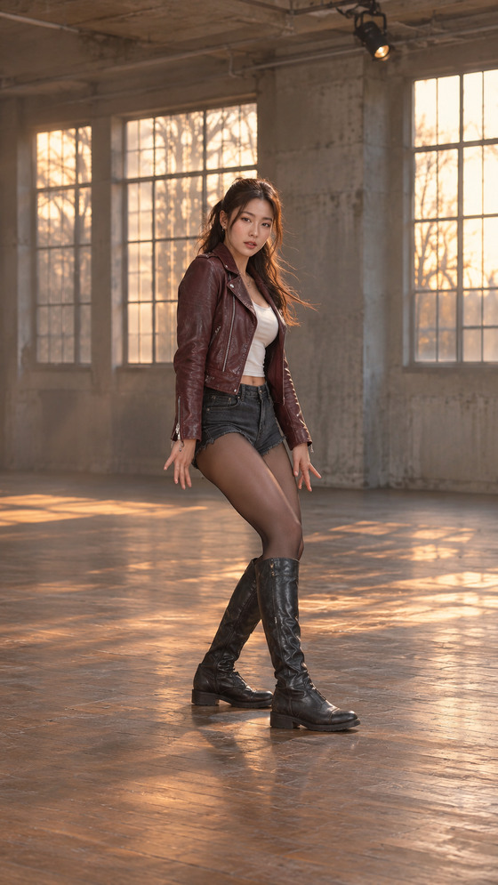
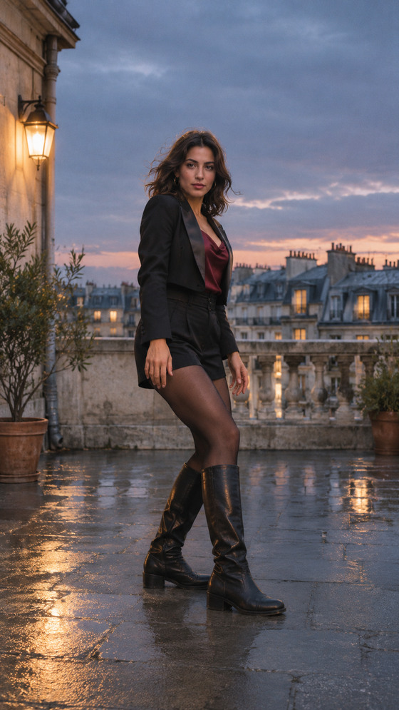
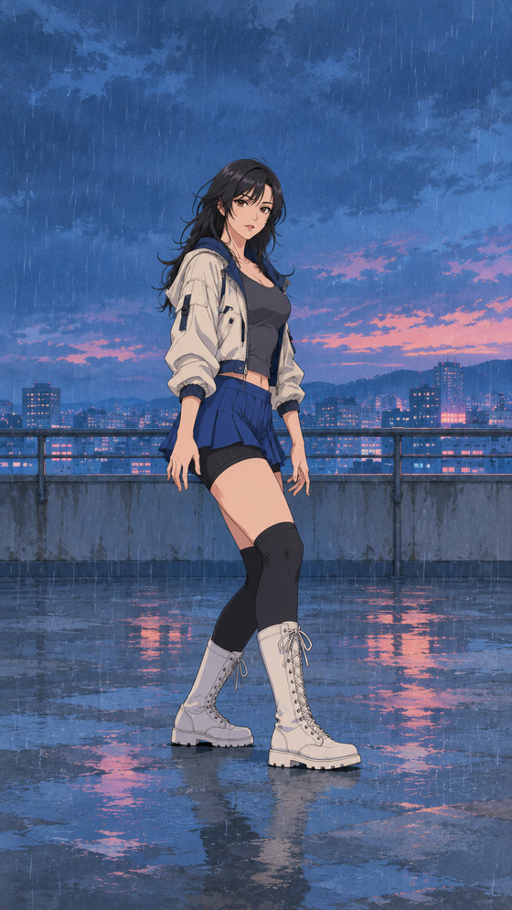

REFERENCE IMAGEPhotoreal · Seoul
Burgundy leather. Golden-hour loft.
RECONSTRUCT · REFRAME · RECAST
Isolate a performance, reveal its point cloud, and direct a new camera.
This preview shows the reconstruction and camera edit. The full cut will add the generated new view and switches between live-action and animation styles.
A SECOND CAMERA STUDY
Hold one moment. Move through its real point cloud. Follow the new camera from a full-body view into a portrait.
The subject is frozen while the camera moves. This preview shows the actual geometry and camera edit; the generated shot is still being evaluated.
Download camera study ↓PHOTOGRAPHIC KEYFRAME REFERENCES
Image references for the new shot. These are still images, not generated video frames.
CASTING EXPLORATIONS
Style references — video motion still under refinement
下面展示角色与场景参考图；生成视频的动作保持仍在优化。

REFERENCE IMAGEBurgundy leather. Golden-hour loft.

REFERENCE IMAGEEvening tailoring. Paris after rain.

REFERENCE IMAGEInk lines. A rain-lit city.